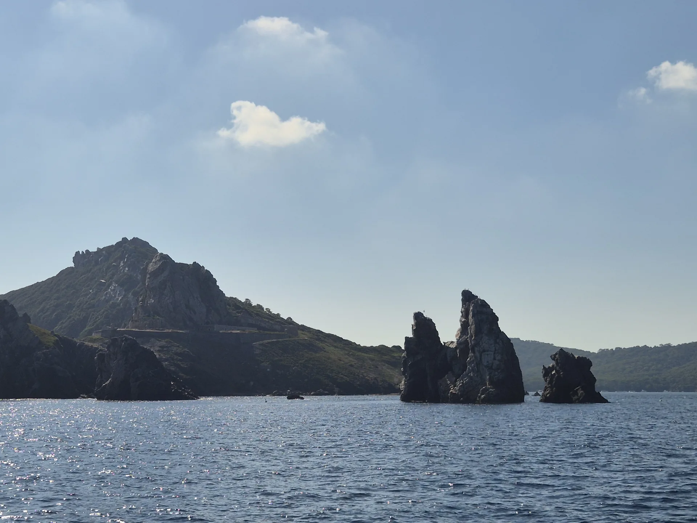
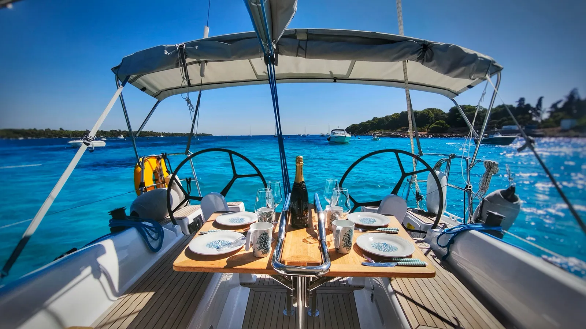
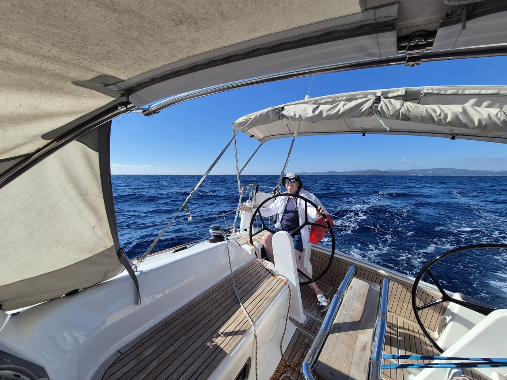

Cannes · Port Canto · Îles de Lérins
PASSION IV
Naviguer. Apprendre. Partager.
Un Hanse 315 à taille humaine, pour découvrir la voile et prendre part à la navigation.
01 · L'expérience
La ville derrière.
La mer devant.
Au bout de la Croisette, Port Canto est le point de départ. On quitte les pontons, la baie s'ouvre et les Îles de Lérins se rapprochent.
L'esprit de PASSION IV tient en trois mots : naviguer, comprendre ce qui se passe à bord et partager le moment.
- Un voilier personnel, pour naviguer ensemble dans un esprit simple et convivial.
- Des équipiers de niveaux différents peuvent trouver leur place.
- Le programme reste lié au vent, à la météo et aux personnes à bord.


02 · Une sortie, simplement
Faire partie
de la navigation.
Pas besoin de tout savoir avant de monter à bord. L'important est d'écouter, de comprendre son rôle et de participer à son niveau.
- 01Se retrouver
Le rendez-vous, le programme et les conditions sont confirmés avant le départ.
- 02Prendre ses repères
On découvre le bateau, les zones où se tenir et les consignes utiles.
- 03Naviguer ensemble
On observe, on pose des questions et on participe aux manœuvres selon son niveau.
- 04Profiter du moment
Navigation, pause au mouillage ou repas partagé peuvent trouver leur place selon le programme.
Ces repères décrivent l'esprit des sorties et ne constituent pas un programme garanti.

03 · Le voilier
PASSION IV.
Hanse 315.
Un voilier habitable compact, pensé pour naviguer à la voile et partager le temps à bord sans multiplier les espaces inutiles.


04 · Chantal
La voile,
et le plaisir de la partager.
Passionnée de voile depuis son enfance, Chantal a navigué sur dériveurs puis sur plusieurs voiliers habitables, comme équipière, propriétaire et chef de bord.
Avec PASSION IV, elle souhaite partager ses navigations au départ de Cannes, accueillir différents niveaux et aider chacun à progresser.
Au fil des sorties, l'envie est aussi de constituer un équipage qui aime se retrouver.

05 · Galerie
Le bateau.
La mer. Les Lérins.

À voir sur YouTube
Quelques moments de navigation.
06 · Débuter à bord
Dix repères.
Pas un manuel.
Des fiches courtes pour arriver avec quelques mots, quelques réflexes et surtout de bonnes questions.
01Se repérer sur un voilierDécouvrir
Avant de partir, regarde le bateau : proue à l'avant, poupe à l'arrière ; bâbord à gauche et tribord à droite face à l'avant.
- Le cockpit est l'espace extérieur de vie et de manœuvre.
- Le mât porte les voiles ; la bôme est la pièce horizontale au pied de la grand-voile.
- Repère toujours le passage de la bôme avant de te déplacer.
02Huit mots pour se comprendreDécouvrir
Bout, drisse, écoute, border, choquer, virer, bâbord, tribord : quelques mots suffisent pour commencer.
- Une drisse sert à hisser une voile.
- Une écoute sert à régler une voile.
- Si un mot n'est pas clair, fais répéter avant d'agir.
03Un gilet qui te va vraimentSe préparer
Le bon gilet est adapté à ta morphologie, à l'activité et correctement réglé.
- Ferme et ajuste les sangles.
- Fais vérifier son état et son fonctionnement.
- Suis les consignes du chef de bord pour son port.
04Les cordages, sans se coincerParticiper
Un cordage peut transmettre beaucoup d'effort. Commence par comprendre ce qu'il commande.
- Garde mains, pieds et vêtements hors des boucles et poulies.
- N'enroule jamais un cordage autour de ta main.
- Ne libère pas une écoute ou un bloqueur sous tension sans consigne.
05Participer à un virementParticiper
Virer permet de changer de bord en passant face au vent.
- Écoute le rôle qui t'est confié.
- Surveille la bôme et reste stable.
- Attends le signal avant de te déplacer ou de régler une écoute.
06Un premier nœud : le cabestanParticiper
Le cabestan permet notamment de fixer un pare-battage. Entraîne-toi à quai, sans charge.
- Deux tours croisés autour du support.
- Serre puis fais vérifier le résultat.
- Ce nœud ne convient pas seul à tous les amarrages.
07Départ et retour au portParticiper
Au port, tout se passe mieux quand chacun sait où se placer.
- Demande ton rôle avant la manœuvre.
- Garde mains et pieds à bord : ils ne remplacent jamais un pare-battage.
- Ne saute pas sur le quai ; descends quand le bateau est stabilisé.
08Si quelqu'un tombe à l'eauSécurité
Ton rôle peut être simple et décisif : alerter et garder la personne en vue.
- Crie immédiatement « personne à la mer ».
- Pointe la personne et ne la quitte pas des yeux.
- Ne saute pas à l'eau ; le chef de bord dirige la récupération.
09Comprendre le mouillageDécouvrir
Mouiller, c'est immobiliser le bateau avec son ancre. Le vent, le fond et l'espace disponible comptent autant que le paysage.
- Reste à distance de l'ancre, de la chaîne et du guindeau.
- Le bateau tourne autour de son ancre : c'est l'évitage.
- Privilégier les zones où le mouillage ne dégrade pas les herbiers.
10Préparer sa journée aux LérinsSe préparer
Une petite préparation suffit pour profiter de la mer sans multiplier les sacs.
- Confirme l'heure et le point de rendez-vous.
- Prévois plusieurs couches, des chaussures qui accrochent et une protection solaire.
- Prends de l'eau et un petit sac souple.
07 · Première fois à bord
Tu peux commencer
par une question.
Dois-je déjà savoir naviguer ?
Chantal souhaite réunir des équipiers de différents niveaux. Signale simplement ton expérience et tes questions. La participation et le programme se décident selon les conditions et les personnes à bord.
Comment m'habiller ?
Prévois plusieurs couches légères, une protection contre le vent et des chaussures qui accrochent. Chapeau, lunettes et protection solaire sont utiles ; il peut faire plus frais sur l'eau qu'à terre.
Que dois-je apporter ?
Un petit sac souple, de l'eau, tes affaires personnelles utiles et une protection contre le soleil. Pour le repas ou une éventuelle baignade, les modalités se confirment avant la sortie.
Comment se passe l'arrivée à bord ?
Confirme d'abord l'heure et le point de rendez-vous. Attends les indications pour embarquer, puis prends le temps de repérer les endroits où te tenir et d'écouter les consignes.
Puis-je participer aux manœuvres ?
Oui. L'idée est de participer et de progresser ensemble. Le chef de bord répartit les rôles. Commence par observer, pose tes questions et n'agis sur un cordage que lorsque tu as compris la consigne.
Quels mots dois-je connaître ?
Bâbord, tribord, écoute, drisse… quelques mots suffisent pour commencer. Les dix repères ci-dessus permettent d'arriver avec un vocabulaire de base.
08 · Infos pratiques
Rendez-vous
à Cannes.
Port Canto
PASSION IV est basé à Port Canto, sur la Croisette à Cannes.
Site officiel de la Ville ↗Venir & stationner
La Ville indique un parking Pierre Canto à proximité. Vérifie les conditions et disponibilités avant ton déplacement.
Informations municipales ↗Tenue
Des vêtements confortables, plusieurs couches, une protection contre le vent et des chaussures qui accrochent.
À emporter
De l'eau, une protection solaire, tes affaires utiles et un petit sac souple plutôt qu'une valise rigide.
Météo
Le vent et la météo peuvent modifier le programme ou conduire à annuler une navigation.
À bord
Repas, baignade éventuelle et participation aux frais doivent être précisés pour chaque sortie avant le départ.